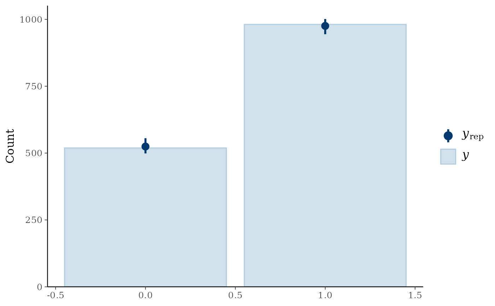

Methods that let a <bartisan_fit> object be used by the packages that assess
model fit. There is nothing to set up: load the other package and call its
function on the fit.
Usage
# S3 method for class 'bartisan_fit'
posterior_predict(
object,
newdata = NULL,
iterations = NULL,
offset = NULL,
weights = NULL,
...
)
# S3 method for class 'bartisan_fit'
posterior_epred(object, newdata = NULL, ...)
# S3 method for class 'bartisan_fit'
posterior_linpred(object, transform = FALSE, newdata = NULL, ...)
# S3 method for class 'bartisan_fit'
log_lik(object, newdata = NULL, ...)
# S3 method for class 'bartisan_fit'
simulate(object, nsim = 1, seed = NULL, ...)
# S3 method for class 'bartisan_fit'
fitted(object, type = "response", ...)
# S3 method for class 'bartisan_fit'
residuals(object, ...)
# S3 method for class 'bartisan_fit'
weights(object, ...)
# S3 method for class 'bartisan_fit'
sigma(object, ...)
# S3 method for class 'bartisan_fit'
prior_summary(object, ...)
# S3 method for class 'bartisan_prior_summary'
print(x, digits = 3L, ...)
# S3 method for class 'bartisan_fit'
loo(x, scale = NULL, ...)
# S3 method for class 'bartisan_fit'
waic(x, scale = NULL, ...)
# S3 method for class 'bartisan_fit'
kfold(x, K = 10, folds = NULL, scale = NULL, save_fits = FALSE, ...)
# S3 method for class 'bartisan_fit'
pp_check(object, type = "dens_overlay", ndraws = 10, ...)
# S3 method for class 'bartisan_fit'
as_draws(x, eta = TRUE, ...)
# S3 method for class 'bartisan_fit'
r2_posterior(model, verbose = TRUE, ...)
# S3 method for class 'bartisan_fit'
r2(model, ...)
# S3 method for class 'bartisan_fit'
model_performance(model, metrics = "all", verbose = TRUE, ...)Arguments
- object, model, x
a
<bartisan_fit>object; the output of a call tobartisan().- newdata
optional; a data frame at which to predict. Default is
NULLto use the data the model was fit to. Missing predictor values are allowed in the columns that had them when the model was fit, since only those columns' splitting rules carry an answer for one; a missing value anywhere else is an error. See section Missing Predictor Values in the Details ofbartisan().- iterations
numeric; optional indices of the stored draws to use, between 1 and the number of draws the fit retains. Default isNULLto use all of them.- offset, weights
an offset and prior weights for
newdata, as inpredict.bartisan_fit(). Defaults areNULLto use those the model was fit with. For a binomial response the weights are the numbers of trials, and so are what a replicate outcome is a fraction of; they must be given alongsidenewdatawhen the model was fit with more than one trial, since the number of trials is not a function of the predictors and cannot be reconstructed.- ...
further arguments, passed to whatever the method calls (the bayesplot check from
pp_check(),loo::loo()andloo::waic()fromloo()andwaic(), andpredict.bartisan_fit()from the rest) and ignored where there is nowhere to pass them.- transform
logical; forposterior_linpred(), whether to map the predictor through the inverse link, which is whatposterior_epred()does. Default isFALSE.- nsim, ndraws
numeric; the number of posterior draws to use, chosen at random from the retained ones. Defaults are 1 forsimulate()and 10 forpp_check(). Appc_loo_*check uses every retained draw whatever this is set to, and says so; see Details.- seed
optional seed, set with
set.seed()before drawing and restored afterwards, following thestats::simulate()convention. Default isNULLto leave the stream alone.- type
string; for
fitted(), the prediction scale, passed topredict.bartisan_fit(); default is"response". Forpp_check(), the name of the bayesplot check to run without itsppc_prefix, so that"dens_overlay"(the default) callsbayesplot::ppc_dens_overlay();bayesplot::available_ppc()lists them.- digits
integer; forprint()on the output ofprior_summary(), how many digits to round the prior's scales to. Default is 3.- scale
string; forloo(),waic()andkfold()on a survival fit, the measure to report the pointwise densities with respect to:"time"for the density of \(T\) and"log_time"for the density of \(\log T\). Default isNULLto use the family's own, which is \(\log T\) for the accelerated failure time families and \(T\) forph(). A fit already on the scale named is left alone, so naming one scale for every model in a comparison is enough. See Details.- K
numeric; forkfold(), how many folds to split the sample into. Default is 10. Ignored whenfoldsis given.- folds
optional; for
kfold(), an integer vector of one fold number per observation, asloo::kfold_split_random()and its relatives return. Default isNULLto draw them at random. Supply them to stratify, to group, or to score two models on the same split.- save_fits
logical; forkfold(), whether to keep the \(K\) refits in the result'sfitselement. Default isFALSE, since each is a whole fit.- eta
for
as_draws(), which columns of the additive predictor to carry into the draws array alongside the scalar parameters, given as either a logical value or a numeric vector. Default isTRUE, which takes a representative ten spread across the range of the fitted function;FALSEtakes none, and a numeric vector takes those observations. The default takes a handful rather than all of them because there is one column per observation, and an array with thousands of them is not somethingposterior::summarise_draws()or a trace plot can be pointed at. The predictor is the quantity whose convergence usually matters, and the onediagnose()reports on, so it is included by default.- verbose
logical; whether to report problems that do not stop the computation, such as a family that has no mean and so no Bayesian \(R^2\). Default isTRUE.- metrics
character; formodel_performance(), which fit statistics to report. Allowable options include"all"(the default),"ELPD","LOOIC","WAIC","R2","RMSE", and"SIGMA", and a vector of them selects several.
Value
kfold() returns a <kfold> object, a list whose estimates holds
elpd_kfold, p_kfold and kfoldic with their standard errors, whose
pointwise holds the same three per observation, and whose folds records
the split; save_fits = TRUE adds the \(K\) refits in fits.
posterior_predict(), posterior_epred(), posterior_linpred() and
log_lik() return a matrix of draws by observations. simulate() returns a
data frame of one column per replicate. loo() and waic() return the
<loo> and <waic> objects those functions produce, and
model_performance() a one-row data frame of class <performance_model>.
as_draws() returns a <draws_array> of iterations by chains by parameters.
prior_summary() returns a <bartisan_prior_summary> object, a list whose
forests is a data frame of one row per additive predictor and one column per
setting the prior is made of, whose estimated says in the same shape which
of them were drawn rather than held, and whose family holds the family's own
parameters with the prior each was given. random and response record the
group-intercept scale and what was read off the response.
The accessors return what their names suggest.
Details
What Is Available
Posterior predictions. rstantools::posterior_predict()
draws
replicate outcomes from the fitted model,
rstantools::posterior_epred()
gives their mean and
rstantools::posterior_linpred()
the additive predictor, following the
rstantools conventions that brms and rstanarm follow, and
stats::simulate() is the same thing in the shape base R expects.
Pointwise likelihood. rstantools::log_lik()
returns the
draws-by-observations matrix of log-likelihood contributions, which is what
loo::loo()
and loo::waic()
need; both have methods here.
Graphical checks. pp_check() runs any of the bayesplot
posterior-predictive checks on the fit. Summaries.
performance::model_performance()
collects the fit statistics in one
table, performance::r2()
gives the Bayesian \(R^2\), and
posterior::as_draws()
hands the scalar parameters to
posterior::summarise_draws()
or to the bayesplot MCMC
diagnostics. The prior. rstantools::prior_summary()
writes out
every prior the fit was given, on the scale it was given on, which is the
companion to prior_only = TRUE in bartisan(): one says what the prior is
and the other says what it implies about the outcome. Basic accessors. stats::fitted(), stats::residuals(),
stats::weights() and stats::sigma() do what they do for a glm, which is
also most of what insight needs to make the fit legible to the
easystats packages.
Leave-One-Out Is Approximate, and Mostly Holds Up
loo::loo()
estimates the leave-one-out predictive density by importance
sampling from the full-data posterior, and the estimate is trustworthy only
when the importance weights have a finite variance, which is what the Pareto
\(k\) diagnostic reports on. The worry for a forest is that it is a very
flexible function of the predictors, so one observation might carry enough
influence over the leaves it lands in that dropping it cannot be approximated
from the fit in hand.
Measured, it usually does not. Over nine fits (gaussian() at \(n = 100\)
with 200 trees, gaussian_ls(), poisson(), binomial(), dpm(), and
bcf() on lalonde with both gaussian() and tweedie()), at most 0.2% of
observations exceeded \(k = 0.7\) and the median \(k\) ran between 0.03
and 0.32. The leaf prior is what makes the difference: it shrinks every leaf
towards zero and the fit is a sum over many trees, so no single observation
dominates the leaves it reaches. The exceptions that did turn up were about
the likelihood rather than the trees, and are the ones worth having; fitting
\(t_2\) errors with gaussian() left one observation of 400 at
\(k = 2.4\).
So the warning loo prints there is worth reading rather than expecting. When it names a handful of observations, those are the influential ones, and refitting without them is what shows how badly they are predicted. A log score on data the model has not seen is available directly:
predict(fit, newdata = held_out, type = "density", log = TRUE)Cross-Validation Without the Approximation
loo() estimates the leave-one-out density by importance sampling from one
fit. kfold() does not estimate it: it splits the sample, refits \(K\)
times, and scores each part under a fit that never saw it. That costs \(K\)
fits and owes nothing to an approximation, which makes it the thing to reach
for when the Pareto diagnostics say the weights cannot be trusted.
It returns a <kfold> object that loo::loo_compare()
accepts beside a
<loo> one, so two models can be compared on one split by passing the folds
from the first to the second:
folds <- loo::kfold_split_random(K = 10, N = nobs(fit))
loo_compare(list(full = kfold(fit, folds = folds),
small = kfold(other, folds = folds)))The refits run under a future plan when one is set, and one set.seed()
reproduces them either way. Each is refitted from the original call, so a fit
whose data argument no longer names the data it was made from is an error
rather than a wrong answer; prior weights and an offset are carried into both
the refits and the held-out scores, since a score taken without them is wrong
rather than approximate.
p_kfold is the gap between what the model predicts for an observation it was
fitted to and what it predicts for the same one held out, which is the price
of having used it. vignette("comparison") reads an example.
Comparing Survival Families
The accelerated failure time families report the density of \(\log T\) and
ph() the density of \(T\). Both are correct for the model that produced
them, and neither is comparable with the other: they differ by the Jacobian of
the change of variable, so a log score taken across that boundary is off by
\(\sum \log t\) over the events, which runs to thousands of points on a
sample of any size and can reverse which family looks better.
scale puts them on one measure. It is not applied on its own initiative,
because loo() would then stop reporting the model's own predictive density,
would no longer agree with log_lik(), and would silently carry the same
error into a comparison against a proportional hazards fit from another
package. It reads the same from either side, since a fit already on the scale
named is returned untouched:
loo_compare(list(aft = loo(aft_fit, scale = "time"),
ph = loo(ph_fit, scale = "time")))Censored observations are not adjusted, since a survival probability is a
probability on either scale. vignette("comparison") works through the
comparison and vignette("survival") through the families.
The seven ppc_loo_* checks reweight the replicates towards the
leave-one-out predictive instead of comparing them with the response
directly, so they need those same weights. pp_check() computes them from
the fit's own pointwise log likelihood and passes them on, and ndraws does
not apply to those checks, because the weights and the replicates have to
line up draw for draw; supplying lw or psis_object takes over from it.
bayesplot::ppc_loo_calibration()
wants a binary response besides,
which is its own requirement rather than this package's.
The two calibration checks are the ones to reach for when the response is
binary, since the default check compares two distributions that can only take
two values and so finds nothing. type = "loo_calibration" is the honest
one, holding each observation out of the probability it is judged against;
type = "calibration" is its in-sample counterpart and reads optimistically.
A binned residual plot (type = "error_binned") and either calibration check
are about the predicted probabilities rather than replicate outcomes, so they
are passed the mean of the predictive distribution instead of a draw from it.
What a Posterior Predictive Draw Is On
The replicate outcomes are on the scale the likelihood was written on, which
is the scale bartisan() stored the response on. A binomial response is a
proportion, so binary data come back as 0 and 1, and data given as two columns
or with prior weights come back as a fraction of the trials. A response with
categories comes back as an integer category index, from 1 to the number
of categories, because a matrix cannot hold a factor; fit$levels names them,
and stats::simulate() returns factors instead, since its result is a data
frame and can. An accelerated failure time response comes back as a time
rather than a log time, and it is an event time: the predictive distribution
of the outcome does not know about the censoring that may have hidden it, so
comparing replicates against censored observations is not like for like, and
pp_check() says so. A custom_family() fit has no posterior predictive
distribution at all, because a log density supplies no way to draw from it,
so those methods error.
What Is Deliberately Absent
There is no logLik() method, and that is a choice rather than a gap. The
generic exists so that stats::AIC() and stats::BIC() can be computed, and
both need a count of parameters, which a forest does not have, since the
number of leaves is itself drawn from the posterior. loo::loo()
and
loo::waic()
are the corresponding quantities for a model like this
one, and they are computed from the posterior rather than from a parameter
count.
For the same reason performance::check_normality()
and
performance::check_outliers()
do not work: they ask for a
likelihood-ratio test and for Cook's distance, neither of which is defined
here. performance::check_predictions()
does work, through
stats::simulate().
The Bayesian R-Squared
performance::r2()
returns the quantity of Gelman et al. (2019): per
draw, the variance of the fitted means across observations divided by that
variance plus the variance of the residuals. Being a per-draw quantity it has a
posterior, which is why it is reported with an interval and why it can fall as
the model is made more flexible. It needs a mean, so it is not available for
ordinal() or multinomial().
References
Gelman, A., Goodrich, B., Gabry, J., & Vehtari, A. (2019). R-squared for Bayesian regression models. The American Statistician, 73(3), 307–309.
Vehtari, A., Gelman, A., & Gabry, J. (2017). Practical Bayesian model evaluation using leave-one-out cross-validation and WAIC. Statistics and Computing, 27(5), 1413–1432.
See also
predict.bartisan_fit() for the predictions these methods are built on;
diagnose() for the convergence and mixing diagnostics;
bartisan-marginaleffects for reading effects off a fit;
vignette("diagnostics") for the fuller treatment
Examples
data("rhc")
set.seed(123)
fit <- bartisan(death ~ . - days, data = rhc, num_trees = 10,
num_burn = 50, num_draws = 50, chains = 2, verbose = FALSE)
#> ℹ Using `family = binomial()`.
#> ℹ Set `family` to choose another, which also silences this message.
# Replicate outcomes, one per draw per observation, whose mean is what
# `fitted()` reports
yrep <- rstantools::posterior_predict(fit)
range(colMeans(rstantools::posterior_epred(fit)) - fitted(fit))
#> [1] 0 0
# Pointwise log likelihood, and the fit statistics built on it
loo::waic(rstantools::log_lik(fit))
#>
#> Computed from 100 by 1500 log-likelihood matrix.
#>
#> Estimate SE
#> elpd_waic -849.2 17.1
#> p_waic 24.7 0.7
#> waic 1698.5 34.1
# Every prior the fit was given, on the scale it was given on
rstantools::prior_summary(fit)
#> Priors
#>
#> Trees
#> • 10 trees per additive predictor, summed. A node at depth d branches with
#> probability 0.95 * (1 + d)^-2, so the root splits with probability 0.95 and a
#> node at depth 3 with 0.059.
#>
#> Leaves
#> • Each leaf value is Normal(0, 0.474^2), that scale being 3 * s / (2 *
#> sqrt(10)) with s the response's scale on the link scale. The scale is itself
#> given a half-Cauchy prior centred there and is estimated.
#>
#> Splitting variables
#> • The share of the rules each of the 14 predictors receives is Dirichlet(1 /
#> 14), whose concentration enters as a / (a + 14) ~ Beta(0.5, 1). Both are
#> estimated.
#>
#> Decision rules
#> • Soft, with "smoothstep" gates. Each tree's bandwidth is drawn from an
#> exponential with mean 0.1, on predictors mapped to [0, 1], and is estimated.
#>
#> Family: binomial, logit link
#> • No parameters of its own beyond the additive predictors above.
#>
#> ℹ The leaf scale, and any number above read off the response, are calibrated
#> rather than fitted; that is how a BART prior is specified.
#> ℹ `prior_only = TRUE` in `bartisan()` draws from all of this, so that what it
#> implies can be read on the outcome's own scale.
# Whether replicate outcomes look like the observed ones
if (rlang::is_installed("bayesplot")) {
bayesplot::pp_check(fit, type = "bars")
}

# The scalar parameters and a spread of the predictor, as a draws array
if (rlang::is_installed("posterior")) {
posterior::summarise_draws(posterior::as_draws(fit))
}
#> # A tibble: 12 × 10
#> variable mean median sd mad q5 q95 rhat ess_bulk
#> <chr> <dbl> <dbl> <dbl> <dbl> <dbl> <dbl> <dbl> <dbl>
#> 1 loglik -8.37e+2 -8.36e+2 5.18 5.93 -845. -828. 1.29 6.14
#> 2 sigma_mu.eta 4.67e-1 4.72e-1 0.0946 0.0901 0.343 0.659 1.13 13.7
#> 3 eta[119] -1.33e+0 -1.35e+0 0.286 0.231 -1.80 -0.844 1.04 51.1
#> 4 eta[24] -3.87e-1 -3.51e-1 0.434 0.469 -1.13 0.207 1.54 4.34
#> 5 eta[648] -9.89e-4 1.71e-2 0.352 0.389 -0.591 0.488 1.16 14.1
#> 6 eta[1432] 2.74e-1 2.58e-1 0.264 0.266 -0.195 0.686 1.09 18.1
#> 7 eta[975] 5.48e-1 5.83e-1 0.339 0.252 -0.156 1.04 1.24 7.41
#> 8 eta[1083] 8.23e-1 8.27e-1 0.345 0.313 0.302 1.36 0.995 36.4
#> 9 eta[144] 1.28e+0 1.29e+0 0.285 0.329 0.848 1.73 1.21 7.97
#> 10 eta[347] 1.65e+0 1.65e+0 0.355 0.392 1.14 2.19 1.40 5.30
#> 11 eta[513] 2.00e+0 2.02e+0 0.471 0.453 1.16 2.77 1.46 4.66
#> 12 eta[1135] 2.99e+0 2.97e+0 0.422 0.467 2.38 3.71 1.39 5.18
#> # ℹ 1 more variable: ess_tail <dbl>